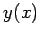

Das allgemeine isoperimetrische Problem besteht darin, unter allen ebenen Flächenstücken mit vorgegebenem Umfang das flächengrößte zu bestimmen. Die Lösung dieses Problems (ein Kreis mit dem vorgegebenen Umfang) soll auf die Königin DIDO zurückgehen, die der Sage nach bei der Gründung Karthagos nur soviel Land nehmen durfte, wie sie mit einer Stierhaut umschließen konnte. Sie schnitt die Haut in feine Streifen und legte sie zu einem Kreis zusammen.
Ein Spezialfall des allgemeinen isoperimetrischen Problems besteht in der Aufgabe, in einem kartesischen Koordinatensystem eine Verbindungskurve y=y(x) der Punkte A(a,0) und B(b,0) zu finden, die eine vorgegebene Länge l hat und mit der Verbindungsstrecke  die größte Fläche umschließt (s. Abbildung).
die größte Fläche umschließt (s. Abbildung).
Die mathematische Formulierung lautet: Man bestimme eine einmal stetig differenzierbare Funktion , für die
gilt und die die Nebenbedingung
sowie die Randbedingungen